Stock Value in enwis)
Contents
1.1 Impacts of Stock value management 2
3.2 Pure Inbound and Outbound processes 6
3.2.1 Purchase and sale of valuable material 6
3.2.2 Non valuable goods („Waste") 15
3.3.1 Stock value in separations 20
3.3.2 Relocation of materials 30
3.4 Additional costs / revenues 30
3.4.1 Surcharges for valuable good 30
3.4.2 Assigning charges to several material lines 34
3.4.3 Surcharges from the outbound process 35
3.4.5 Surcharges and Adjust Cost – Item Entry 38
4.1.1 Item Charges for material lines of entry type drop shipment 46
4.1.2 Equipment services as item charges 46
4.1.3 Mixt amounts of materials and item charges: 46
green are the not yet existing chapters
Preface
Impacts of Stock value management
If materials are managed as items in enwis) it's possible beside to manage accurate values for these items beside the pure management of quantities. The maintenance of data and structures like the contracts need additional attention. This increases the time needed for consultancy and training but as well for the users during daily work. Only based on very accurate data maintenance the resulting stock values can be somehow reliable. Everyone should be aware about this limitation when making the decision to work with stock values.
There is an ongoing debate if the kind of "negative stock value" which result from the fact that we sell the service of receiving/collecting the materials and from the need to deal with internal – own treatment plant – or external costs – for (external) disposal – should be managed as a stock value. From the perspective of legal requirements for finance these are often defined as accruals not as a negative stock value. But from a controlling perspective it makes a lot of sense to apply the same logic as for positive stock values:
Buying a raw material just increases the stock value and won't create any profit.
Production costs can be handled similar to the purchase costs as a surcharge increasing the stock value.
By later on selling the material the stock value get reduced and the sales amount deducted by this cost of stock value increase make up the raw margin.
If the raw material starts with a negative value due to the sales amount for the receiving process instead of the positive value in a "usual" purchase process doesn't make a real difference from the controlling perspective. If the process ends with a purchase it makes as well no difference for the basic methodology. NAV item management is supporting this approach with some limitations to be kept in mind:
Negative Stock quantities are very common in the waste and recycling industry with its wet bulk materials and with its liquids. The stock quantity in NAV is simply the sum of all posted transactions. Weighing the inbound and outbound transactions is usually manageable. But differences in the mass balance due to "drying", internal movements without accurate "weighing" and reclassification of materials without accurate mass balances due to limited weighings are common. So frequent stock takings are necessary. But between those adjustments the all transactions might sum up to a negative value. As this exceeds the functional scope of the NAV value management this needs to be blocked. Together with delayed posting of inbound transactions but most of all for internal processes resulting in stock quantity adjustments for the materials this situations might occur frequently. In this case special precautions are necessary to handle this situations without slowing down the processes too much.
Sales amounts get posted as negative costs as soon as the sales invoice get posted. The analogous purchase amounts get immediately posted as expected costs. This "delay" might be important for some business processes.
Content
This document provides a rough overview for the Stock value management in enwis):
The necessary setups (see chapter 2) and
The basic business processes being involved:
Inbound / Outbound for
Valuable goods (= recycling) (3.2)
Non valuable goods (= "waste") (3.3)
Separation (3.4) for
Valuable goods (= recycling) (3.4.2-3.4.4)
Non valuable goods (= "waste") (3.4.5-3.4.7)
Surcharges and Deductions due to by-services in the inbound, outbound and separation process (3.5)
The intention is to give somebody knowing the processes in the industry a basic guideline how to set up a (testing) scenario. This document is not intended to be a full blown manual for the mentioned topics.
Setups
General Setup
For the stock value management the following special setups in the inventory setup are mandatory:

The management of the propper unit costs is technically only guaranteed if you prevent a negative stock quantity. This setting is clearly mandatory for enwis) working with item and their values.
In the waste management industry it happens quite often that you get payed for collecting materials. The setting of "Allow Negative Inbound Cost Amount" allows the sales amount for an order line stocking material to be posted as (negative) costs for the item which leads to a negative stock value. It depends on legal requirements for finance in each country if this setting should be set. But posting this negative costs is the only technical way to calculate proper gross margins for the outbound item entries.
Setup of materials
The usual setup for an item used in enwis) should look like this:
The item No is mandatory of course.
A description is useful
The base unit should usually be tonnes (to or MG)
Internal information
To avoid rounding issues during separations the rounding precision should be set to a small enough value. At most something like kg as in this example:
Setup for item charges
A service gets defined as Item Charge with the following settings:
The service needs to be marked as Item Charge.
The Item Charge Assignment fields defines how the charge for this service gets added to the material lines in the order:
Manually: The user has to put in the split manually. This usually makes no sense in the enwis) process.
Equally: The charge gets split by the quantity of the material lines. (Buggy right now) This will be the most appropriate setting in most enwis) cases.
Amount: The charge gets split by the amounts of the material lines. This can be a setting in some enwis) cases.
Process examples
Example data
These are the materials being setup for the following examples:

D is a material which get payed to receive it. A valuable good like metal scrap.
E is a typical waste where you get payed to collect it.
Of course sometimes materials in the recycling industry are somewhere in between valuable and "waste" and depending on periods with moving market prices, quantities and purity of loads the material might be sometimes valuable and sometimes you need to pay for getting rid of it. The examples should just be seen as a starting point to understand the value management in enwis).
F is used to demonstrate how the values get passed over via production.
So does G
H is a by-product of a production in the meaning that it's a waste material like E where we will need to pay to get rid of it later, whereas F and G are valuable materials like D.
Pure Inbound and Outbound processes
Purchase and sale of valuable material
The first example is the simple case known from all the other industries where you buy (raw) material from a vendor to sell it to a customer later on. This happens in areas like metal and paper trading.
The collection of small loads and/or pure quality of these kind of materials might lead into areas where you get payed for the collection, which is basically due to the logistical effort, outdating the value of the collected materials. In this case the sum of the order line amounts will positive – seen from the sales perspective -. In this case the material is from the enwis) perspective now what is named a non-valuable material in this document. So check out chapter 3.3 for those processes.
First Purchase of material
The purchase process starts with a contract lines like this:

The posting type is purchase. A sales line with a negative price would end with a similar result
Via the debitorisch-kreditorische springen it ends up as a purchase line in which case the result is exactly the same.
If it get's posted as a sales credit memo - which in most countries and situation is not allowed due to tax legislation – the result would be slightly different.
The line needs a unit price.
The Material Reference Type needs to be Item
Our example Material for valuable goods.
It need to be a stocking = Inbound load
The order created from this contracts brings the following additional data:
Quantity of material (usually in tonnes).
The task date for the receiving of the load in our location which becomes the posting date for the stock entry.
A Location would usually be used but was left empty to keep the example as simple as possible.
The order gets posted either as a release of the order or as a pure posting of stock:

This is the result in the item chart of accounts:
The 3 tons are seen on stock and as a quantity of stocking processes.
The item ledger entry resulting from the posting is:
Quantity is 3 tons. In this case this would show the quantity measured in tons due to a unit conversion routine if the order would have used a unit like cubic meter.
This quantity is of course fully remaining on stock
And the expected Purchase amount is 30. It's still an "expected" value as the purchase invoice wasn't posted yet – actually it's not even created yet.
The creation of the purchase invoice – via combine invoicing – is the next step in the process:
In the invoice, due to a price change occurring in the meanwhile, the price might have changed:
- In this example, the contract price of 10 got now adjusted to 12 in the (unposted) invoice.
Posting this invoice now results in this modified item ledger entry data:
The invoiced quantity is now 3 instead of 0.
The expected purchase amount is now 0 instead of 30,
As the actual purchase amount is now the 36 due to the new pricing.
But most of all the Cost Amount (actual) is now 36.
The details can be seen in the value entries for this item ledger entry:
A new value entry was created with the updating data:
Document Type is purchase invoice with the invoice number as document number.
The withdraw of the expected cost and the posting of the actual cost instead of this
The new cost per unit
The item ledger entry quantity was not touched but the valued quantity got touched.
Sale of valuable Material
The sales process starts with a contract line of posting type sales:
Posting Type is Sales,
The Post with No is another business partner then the one in the purchase line.
The line has his own price which hopefully leaves room for a gross margin.
But most of all the Waste Entry Type is disposal – or drop shipment with pos. adjustment as drop shipment type - for this process.
The order created from this contract line takes the following additional data:
The quantity of the material – usually tons –
And the task date for this delivery or pick-up from our yard.
Posting this order results in the following data in the item chart of account:
The stock quantity is now decreased to 2 which is the sum of the two entries of +3 and -1:
The newly created "sales" entry shows the relevant data:
Order number as document no.
The Quantity of -1
The sales amount of 15.
But no cost amount at this stage of the process!
In the G/L this is seen in the following way:
The stock value is still shown as 36 for the initially stocked 3 tons with 12/ton.
To adjust this is the job of the Adjust Cost – Item Entries feature in NAV:

... which adjusts the outbound item ledger entry:
By showing the expected costs for the outbound load. Which can be seen in detail in the value entry which got newly created by this function:
Now this sell needs to finalized by posting the invoice. The following invoice gets posted:
... which updates the item ledger once again:
By moving the – in this case unchanged – numbers from the expected to the actual fields. The details are seen in the value entries in a newly created entry: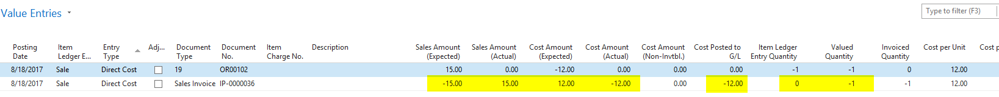
with values to withdraw the values in the expected fields and moving them to the actual fields.
But even more important these actual costs and revenues got no posted in the G/L: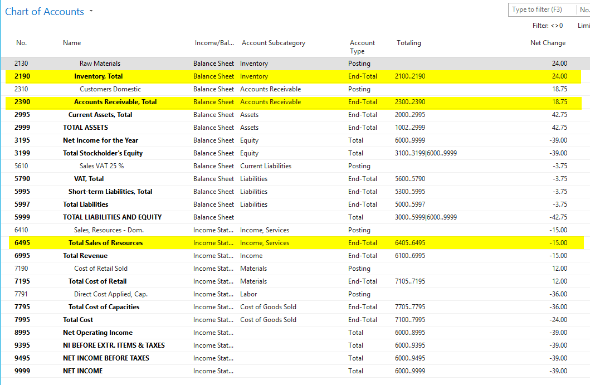
The stock value got now decreased to 24 for the remaining 2 tons of 12.
The sales amount is now 15 which is the sales amount from this invoice.
And the AR is 18.75 including the applicable VAT.
Second purchase order
To show the impact of several purchase orders with different purchase prices for the stock value the following order was created: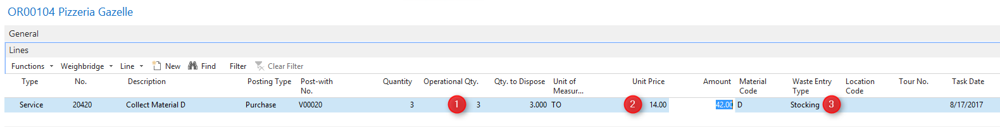
With the same tonnage as the first order.
But a different price 14 instead of 12
And being a Stocking like the first order.
In this case we step directly into the purchase invoice including the background posting of the item: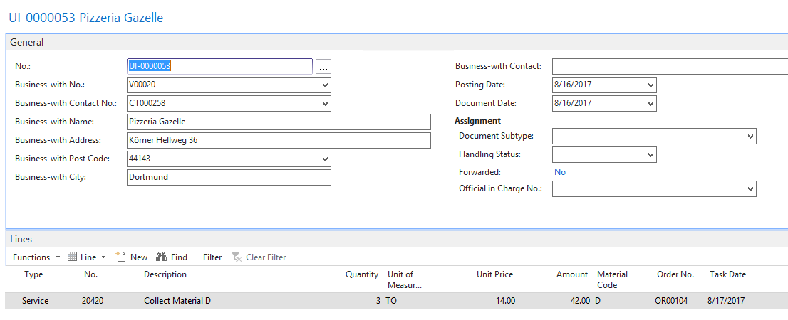
After posting this invoice the item ledger entries are: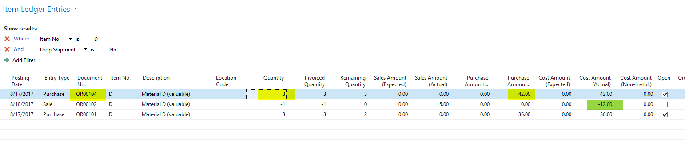
The newly created item ledger entry for the 2
nd
order with a quantity of 3 and a purchase and cost amount of 42. But the cost amount for the first sales order remains untouched with a cost of 12.
Adjust Cost – Item Entry functionality
Once again the Adjust Cost –Item Entry functionality fixes this situation.
After performing the function the outbound item ledger entry got adjusted:
By correcting the cost amount to the average purchase price of 13 from the two loads of 3 tons each with their price of 12 and 14.
The data are managed in a new value entry: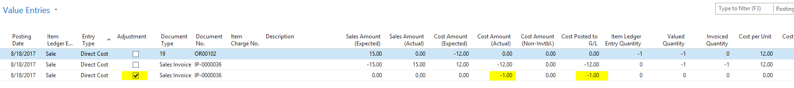
Which updated the G/L as well: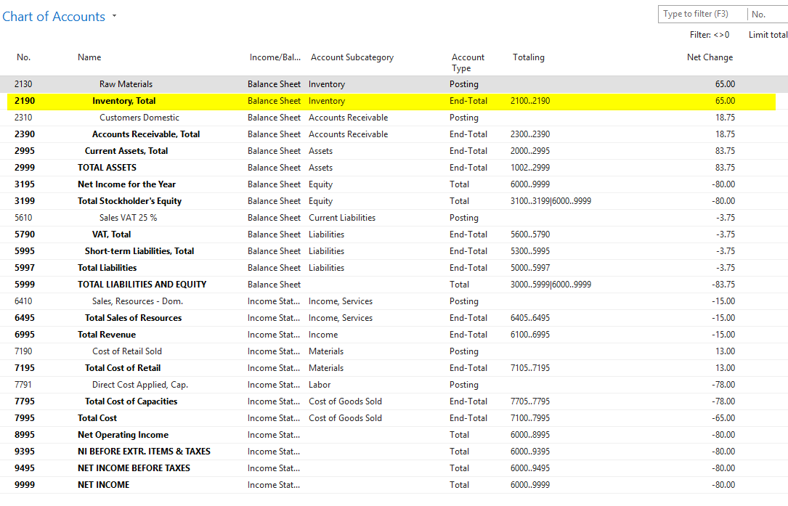
The remaining stock value = Inventory is now 65 which is the remaining tonnage of 5 times the average price of 13.
Second Sales order
A second sales order is using:
The same tonnage as the first sales order.
But a different sales price
Posting this order updates the item chart of account: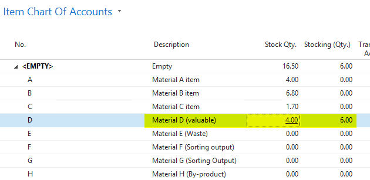
In this case the new item ledger entry is using the new average unit cost without Adjust Cost-Item Ledger as the average price of 13 is still applicable: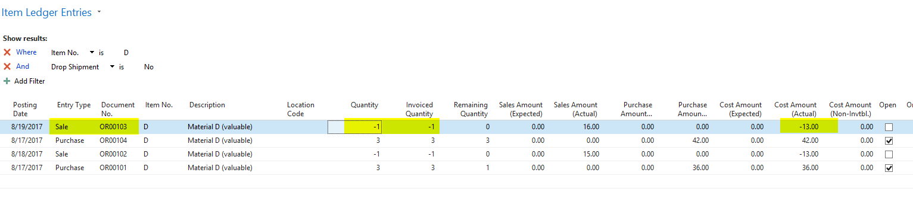
Non valuable goods („Waste")
The following example is following the same material flow as the example in chapter 3.2 for the valuable materials. The only difference is that from the financial perspective the inbound of the materials is a sales and the outbound is a purchase for this case of "non valuable materials".
Starting point for the example
In the G/L area we start from an empty chart due to limiting the monitored period:
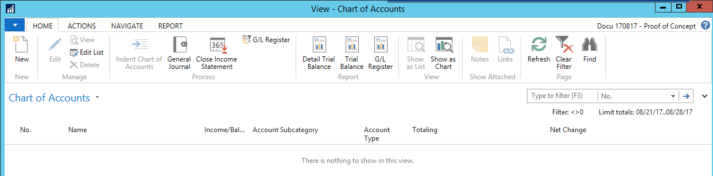
Concerning the stock we start from the situation resulting from the first example but we focus on material "E" which wasn't used up to know: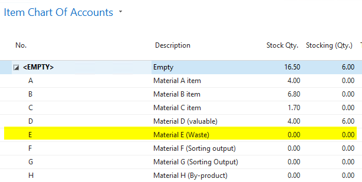
In the contract lines only those data get highlighted with specific data for this process whereas the other data are similar as in the first example: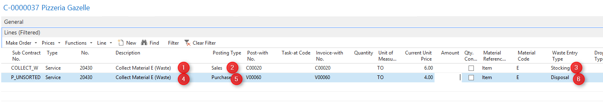
and 4. Service and description might differ.
and 5. The posting type is just the opposite of those in the first example:
The stocking of material is a sales and
The disposal of material is a purchase
and 6. whereas the waste entry type is the same as in the first example
First sales order
The first order created from the first contract line adds the following order specific data: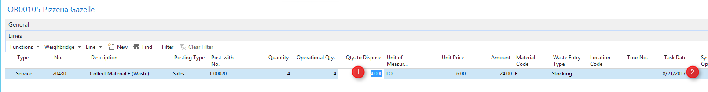
The tonnage of 4.
The task date which will be the posting date for the item ledger entry.
After the posting of this order the results for the stock are: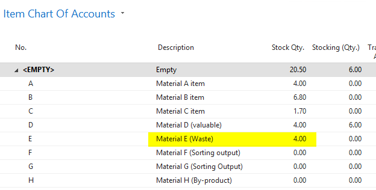
The stock was increased by 4. The stocking quantity should have been increased by 4 as well. That's a kind of bug which will get fixed.
The newly created item ledger entry looks very similar to the one in the first example: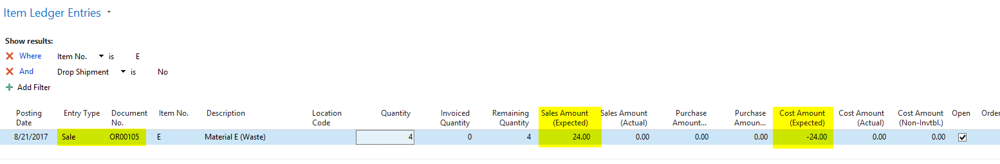
The amount is seen in the expected sales amount instead of in the expected purchase amount in the first example.
And the expected cost amount is now showing a negative sign which is perfect.
The sales invoice gets now posted with a modified pricing which is the analogous process to the one applied in the first example for the valuable material: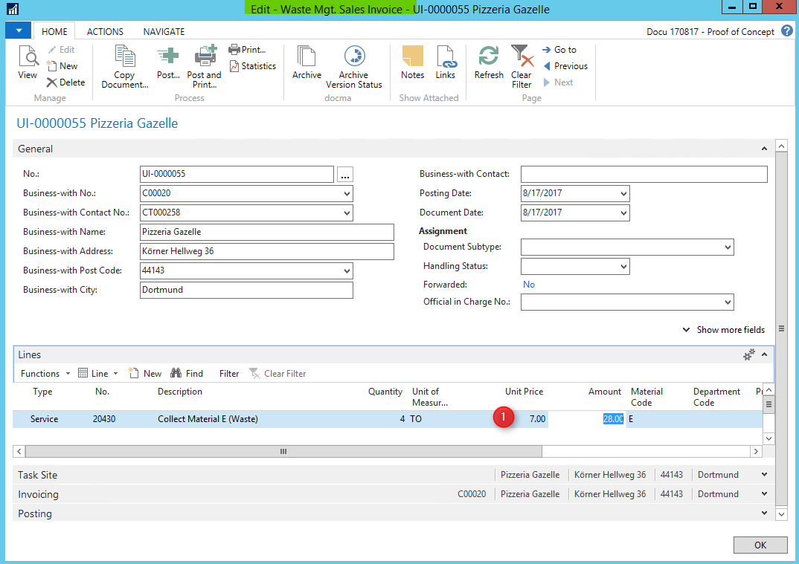
Price got increased from 6 to 7 per ton.
After posting the item ledger entry got updated:
Sales and Cost Amount are both now "actual" instead of "expected" and the amounts got adjusted due to the new price.
A new value entry consists of the necessary data to make up the difference: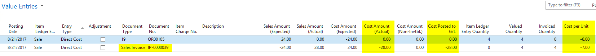
As the Posting date of the invoice was out of scope for the filter for the chart of accounts, the turn-over is not displayed in this filtered G/L chart of account. But at least the stock value got posted correctly :
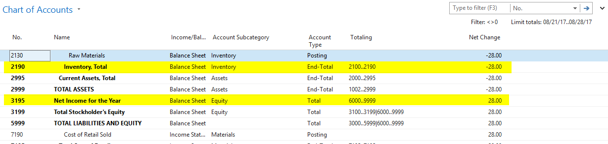
Purchase order for disposal
The next step is to create a purchase order for the disposal: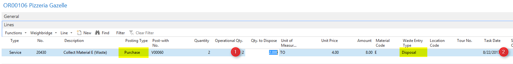
With the tonnage of 2
And the disposal date
Posting this order results in the following updated Item Chart of accounts: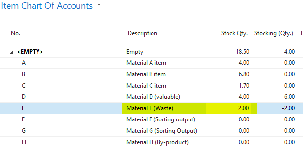
The Stock quantity got decreased correctly.
The Stocking quantity is displaying the result from this purchase order which needs to be fixed similar to the result from the sales order.
If we take a look at the item ledger entry: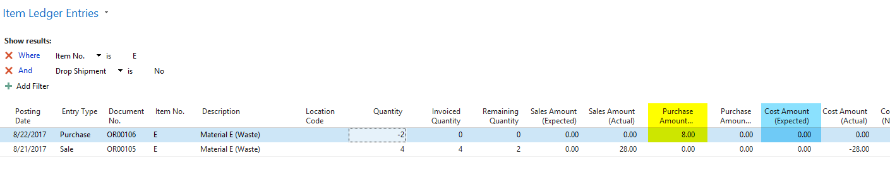
We see, that the cost amount is initially not being posted, just the expected purchase amount.
This differs from the situation for the valuable goods which looked like this:
The „Adjust Cost Item Entries" functions results in a corrected version of the item ledger entry: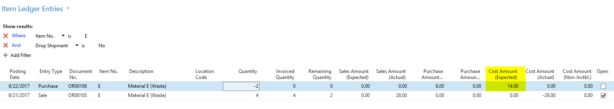
Due to an additional value entry: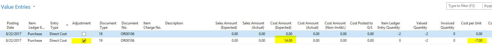
Being marked as Adjustment
With the corrected expected cost amounts.
Posting the outbound order as a purchase invoice: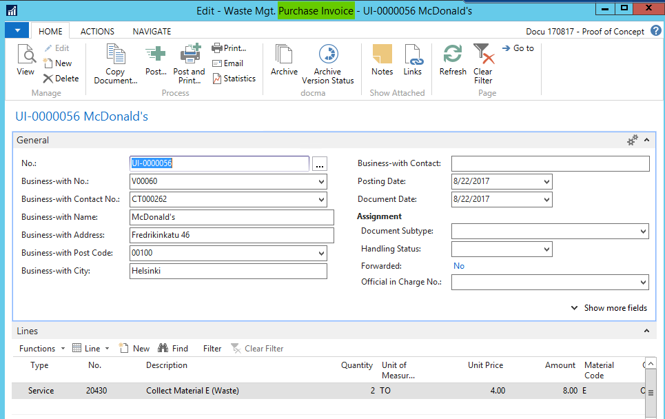
...results in a second item ledger entry: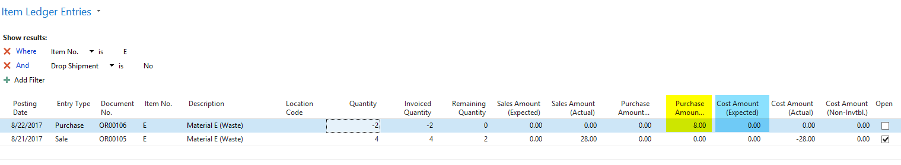
The Purchase amount is posted as expected but
Cost Amount expected is not yet posted.
The Adjust Cost-Item Ledger function fixes these values as this function is exactly made to fix outbound item ledger entries: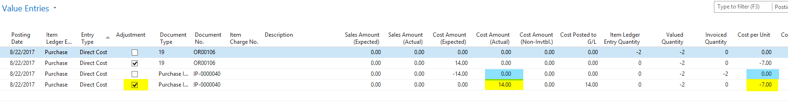
In the additional value entreise the values from the intial posting got corrected.
The resulting item ledger entry is now showing the expected values:
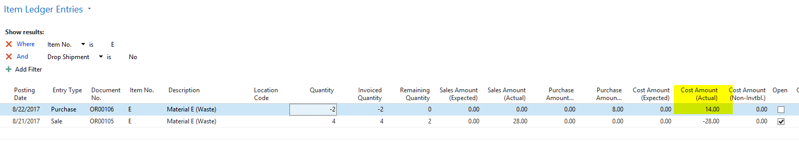
The result for the G/L is showing the reduced stock value as the quantity on stock is now 2 tons of 7 each:
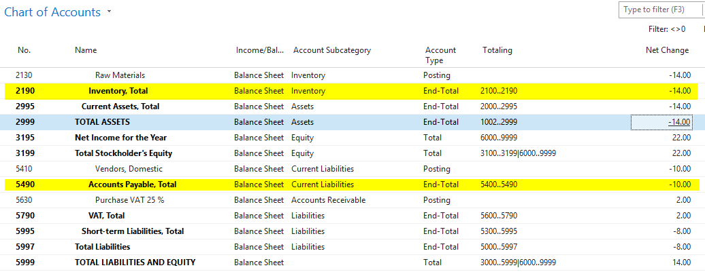
The AP are showing the values from the purchase invoice.
Throughput Processes
Stock value in separations
The separation is the other operational process for the materials which is describing the process in our own yard/warehouse. The third process is the relocation (see xx).
A separation can be the enwis) representation of the following "real world" processes:
Materials that are distinguished for the inbound process may be for legal reasons – different EWC (European Waste Codes – or financial reasons get put together in one bin in our location. This happens in tanks and in many cases for bulky materials due to limited number of bins. It occurs if from the internal perspective of further treatment and purchase the materials are seen as so similar that this mixing has no impact on processes, quality control ... This approach might be named "mixing locations".
Materials are sorted in different materials. Sometimes one of the resulting materials is the "cleaned" version of the input material. In this case for the sake of a proper stock value management it's necessary to either define the "cleaned" material as another item or use two different locations. Otherwise you would run into kind of endless recursive calculation processes.
But there are as well cases where nothing happens "physically" but it's just a reclassification of the materials. However, for enwis) this needs to be managed as a separation.
The last real world process is the automated outbound separation in one of the 2 following scenarios where in distinction from process 1 and 2 no measurement/weighing is performed around the separation process:
In a sorting plant you might only care about inbound and outbound to avoid the extra effort and the limitations/ambiguity for measuring the throughput. In this case an automated separation "producing" the sorted outbound materials from the input material during the posting of the outbound material allows at least to monitor the estimated remaining stock on site without knowing how far it's already separated. And it allows for some controlling of the realized sorting percentages with limited accuracy for periods.
Some customers are mixing the outbound material from the materials on stock following a kind of recipe. In this case the posting of the outbound might trigger this production independent from the time this mixture takes place in the real world.
Seperation of valuable materials
Starting Data
The example starts with the stock resulting from the first example with an available stock of 4 tons of material D and an empty stock for the output materials F and G which we'll generate in the following example:

With the following item ledger entries for the material D which is the input for the seperation: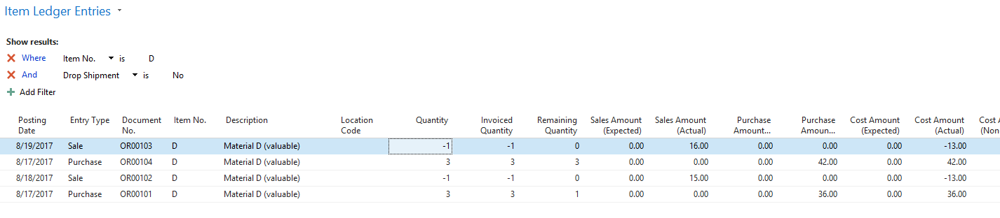
And the inventory Value in the G/L:
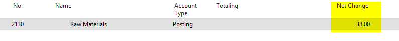
Seperation template and production BOM
A seperation template needs to be setup. The separation template defines:
The steps for a separation if for example the output of a first step is used as an input for a second step for this separation. The following examples only describe the simple case of 1 step seperations.
Behind the steps the input materials being utilized get defined by assigning a Bill of Materials (BOM)
The output fractions get defined.
Costs / resource utilization get assigned indirectly by the "Routing".
The special fields important for this example are:
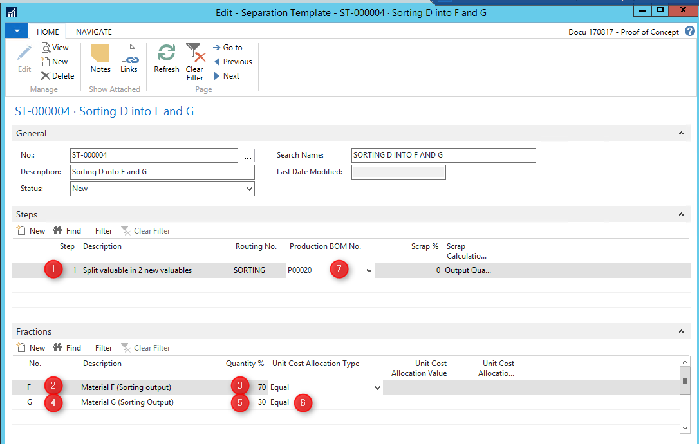
1. At least one step line is necessary
2. D (see 7) gets split in two new materials - both valuable in this example -. First of them is F
3. ... with an (expected) percentage of 70% of the input quantity
4. The other is G
5. ... with 30% of the input quantity
6. Cost Allocation Type "Equal" is the most simple type - more advanced types will get inspected later - splitting the costs by mass percentage of the output.
7. The components = input material result from the BOM with the following important data:
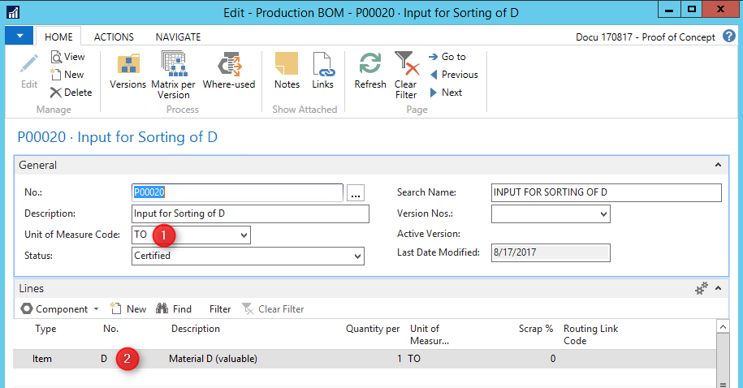
1. Mandatory UOM
2. Input Material
8. The routing (see 3.4.1.3) is managing the resources and related costs for the production.
Routing and Work Center
The routing is managing the resources and their costs for the production.
The route defines the utilization of work centers: 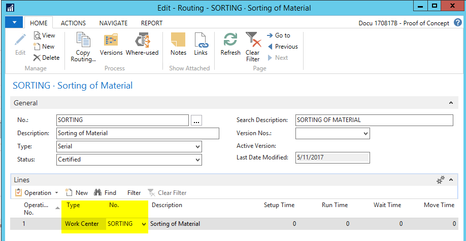
In the work center data entity the costs get specified. In the following setups for the work center the costs were set to 0 to simplify the example:
The costs of production are kept out of scope for the moment by putting them to zero.
The flushing method is set to manual to allow a pure manual input of the production journal.
The workcenter gets inherited to the routing:
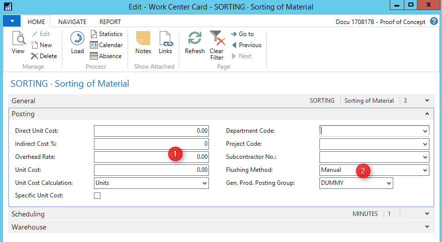
Seperation Order
The separation order gets created from the separation template: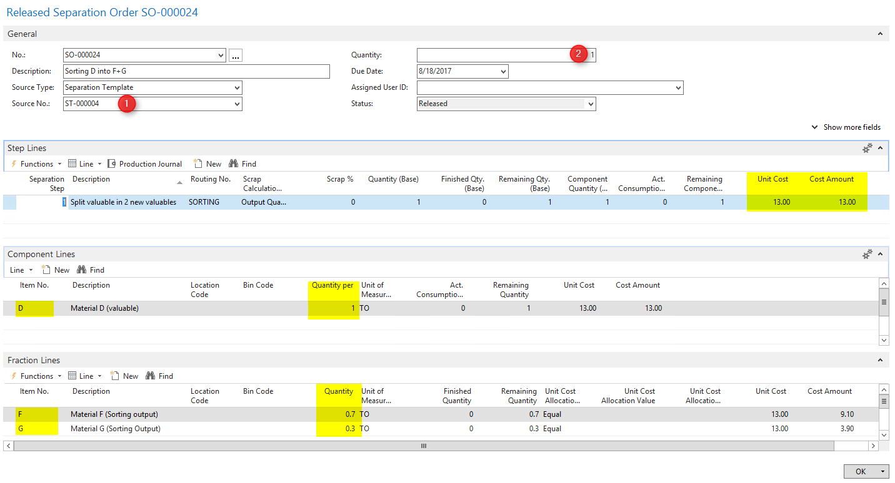
Choosing a template
Enter the quantity.
And by triggering the "Refreshing Seperation" function the following data – important for this stock value tracking get populated:
The materials – D, F and G –
With their (expected) quantities
The Unit Cost and the Cost Amount
In the production journal the quantities can be edited which wasn't done in this example:
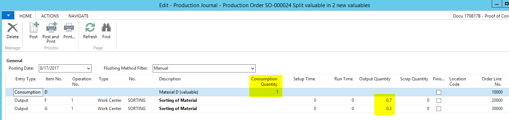
As a result of posting the journal the separation order got updated: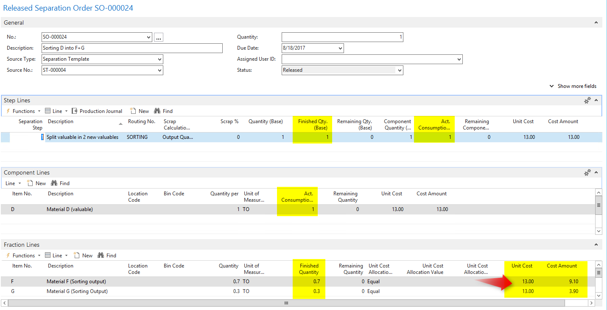
Quantities are now found as „Actual Consumption" or as „Finished Quantity".
But most of all the Unit costs and the cost amounts for the output materials got calculated.
Posting results
The posting results are visible in the item chart of accounts in means of quantities: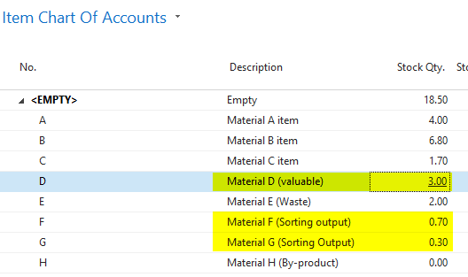
The item ledger entries show expected costs for the output – as the separation order is still not finished – and as actual cost amount for the consumed input: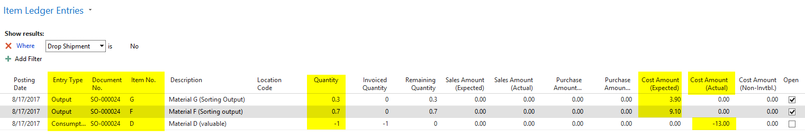
After finishing the separation order:
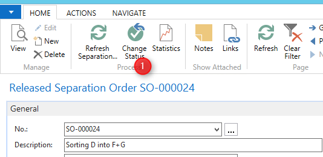
and
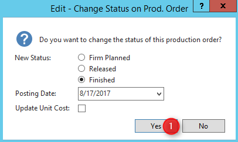
... the outputs are now posted as actual cost amounts:
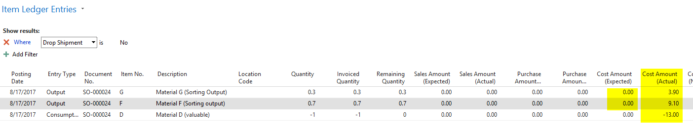
But the stock value has not changed which is a crucial requirement for a proper stock value management:
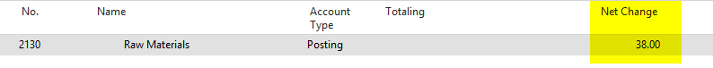
The production cost – which we setup as zero to simplify the example – could have been posted as increase of the stock value but except of this, the all over all stock value should never ever change when you just separate materials. This is technically a challenge, but as we could see it's proper managed in this feature together with basic NAV functionalities.
New purchase resulting in revaluating the stock
Similar to the simple buy and sell case (see 3.2) a new purchase of materials with another price then the current average unit cost for the input material will modify the average unit cost for the input material. Given this input was posted for a posting date prior to the separation this needs to adjust the cost amount for the separation and consequently the cost amounts for the output materials.
After a purchase of additional 4 tons of D, the item chart of account looks like this: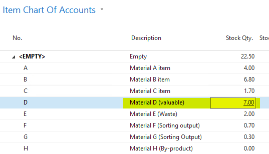
The new item ledger entry shows a purchase amount of 44 = 11 / to: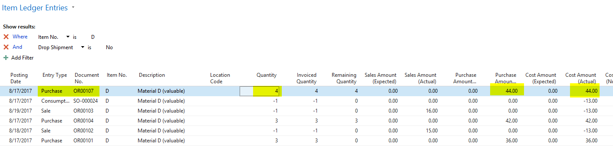
After performing the "Adjustment Cost Item Entries" all Sales and Consumptions with a posting date later then the new purchase – being posted for 8/17/2017 – got adjusted with a new unit cost of 12.20 instead of the former 13 including the consumption entry for separation SO-000024: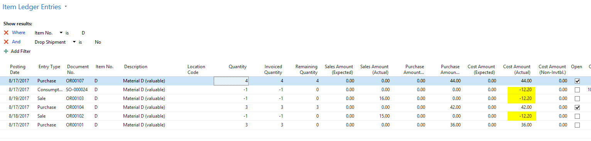
For the consumption from the separation above (see 3.4.2.3 and 3.4.2.4) a new adjusting value entry was created like this: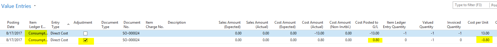
And the other item ledger entries from the separation got adjusted as well to make sure, that the sum of Cost amounts for the separation order remains to be 0 as the stock value should never change due to a separation (see above):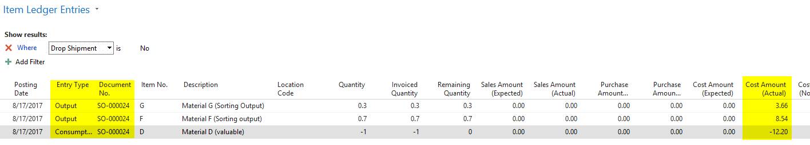
These are the value entries for one of the output entries as an example how this is managed in the system:
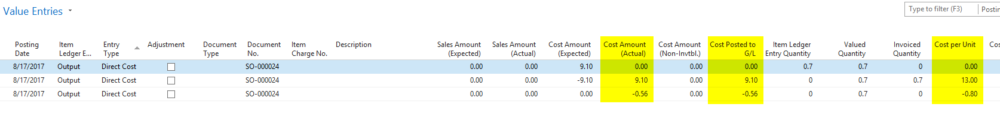
The results in the G/L need a deeper look:
The stock value has changed:
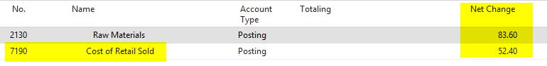
Former 38 plus
Purchase of 44
Should sum up to 82 instead of 83.60. But this is NOT a bug but a feature if we drill into the details. The reason is, that we need to take the "Cost of Retail Sold" in account.
The G/L entries resulting from the separation, the new purchase and the later "Adjustment Cost Item Entries" are:
The initial separation summing up to 0 purely in the stock account (2130).
The purchase itself increasing the stock. (The opposite accounts are excluded from this filter)
The "Adjustment" on the sales being posted in the past but with material, which needs to be adjusted. This is partly "withdrawing" the initial move from stock value (2130) to the cost of retail sold (7190) as the stock value "consumed" for those sales was lower than initially posted.
The adjustment of the separation as expected summing up to 0 purely in the stock account (2130).
Seperation with by-products
In the laste example the valuable material got splitted in two new valuable products. But of course in the waste management industry you will quite often run into a case, where the valuable product, for the case with the non-valuable product see chapter 3.3.1.3, get sorted into some pure waste and a "cleaned" material with a higher value per ton.
The starting point is the existing stock of 10 tons of the material I:
With a cost of 25 per ton:
Seperation Template and Order
The separation template for this example is very similar with the one from chapter 3.3.1.1:
The input gets defined in a production Bill of Materials which was shown in chapter 3.3.1.1.2.
The first output material is the cleaned up material
Which is expected to be 70% of the input quantity
The Unit Cost Allocation Type of Percent together
With the Unit Cost Allocation Percent makes sure that all the costs from the input decreased by the cost from the second line (see 6 to 9)
The second output is a "waste" = non-valuable material
Which an expected share of 30% of the tonnage of the input.
The Unit Cost Allocation of "Fixed" together
With the Unit Cost Allocation of minus 2 will result in a fixed cost per to for this material.
The separation order:
Simply applies the separation template as seen before.
With the tonnage of the input being entered as well.
Reapplying this input populates the lines with the yellow marked fields for the quantities and the expected costs for the output which got calculated correctly:
The costs of the input are 1 to of 25 making it 25.
The costs for the waste material H are 0.3 of -2 per to making it -0.6.
The resulting valuable product needs to balance these costs and therefore ends with 25.60 as cost amount which is 36.57 due to the tonnage of 0.7.
Posting the production order without any change of the data:
And finalizing the separation order with a status change:
Post the numbers as Actual Consumption and Finished Quantities.
Results
The resulting quantities are visible in the item chart of accounts as expected:
The item ledger entries for the separation order are showing the expected numbers:
Second production with other split of materials
In a second production order the material splits into the same materials but with a quite different percentage:
New order ...25
With quite less valuable product
And a higher "scrap" percentage of 35%
The result in this separation order shows the impact on quantities and costs:
The posted values can be checked in the item chart of accounts:
And the item ledger are showing the values as expected:
The cost for the input is once again 25.
But this time it get increased by the negative value of 0.70 for the waste material H.
This results in a value of 25.70 for the valuable output and a much higher cost per to for the 0.65 tons of this product.
Adjustment of separation results
All these number should be updated when the costs for the input material gets adjusted due to newly posted purchases for posting dates up to the production date.
The process starts with a second purchase of material which gets posted after the productions got posted but which is for a posting date prior to the production:
The second load of the input material I costs 35 per to compared with the 25 per ton for the first load. The tonnage for both is 10.
The Adjust Cost – Item Entries function gets called for all the materials involved:
Which updates the item ledger entries from the above example (see chapter 3.3.1.2.3):
The costs for the 2 consumptions got adjusted from 25 to 30 for both separation orders of 1 ton each.
The fix costs for the waste material H don't get touched as they are fixed.
As the result the costs for the valuable material F get updated from 25.60 to 30.60 and from 25.70 to 30.70.
Seperation of waste with partly valuable output
The same process and comparable value flows can be expected for waste materials being separated. In the following example the more complex process of a valuable and a non-valuable output gets presented.
A typical daily business case is all kind of cherry picking like stripping of metal scrap from mixed waste to sell this scrap and leaving the rest of the waste for the usual treatment.
Starting Data
The waste material to be sorted is material K with a current stock quantity of 10 which should get sorted into F and H without any stock yet:
The value of the K material can be seen in the item ledger entry:
It's a minus 200 or -20/ton.
Seperation template and order
The production BOM is very similar to the example for the valuable material (see chapter 3.3.1.1.2 and 3.3.1.2.1):
The separation template is as well basically the same as in the other examples:
The step defines the input
With the Routing and Work center and
The input material defined in the production Bill of Materials
The first output material is the valuable material F
with an expected yield of 15%
and 7. Taking a percentage of 100% of the negative value of the input decreased by the costs which are taken by line 2:
- The 2
nd
output material is a waste material H
With an expected yield of 85%
And a fixed negative cost
of 25/ton.
The Separation order applying this template looks like this:
The quantities get populated as expected
But the costs for the input
And for the output material are only based on the positive costs – as seen in 3.3.1.2 – and which isn't applicable in this example.
A first production gets posted from the production journal with the defaulted split:
The result for the separation order are purely the updated quantities which are now "actual" and "finished":
Result
After finalizing the separation order including the unit cost adjustment and posting:
The quantities got updated in the item chart of accounts:
And in the item ledger entries for the separation order:
The quantities are fine,
The cost amount for the input material is fine as well.
But the cost amounts for the output materials are kind of odd:
The negative cost amount for the waste material should be 0.85 tons * 25/ton = 21.25. But at the moment the separation functionality is limiting the cost to the value of the input of 20.
Taking this -20 for H in account the cost amount of F makes perfectly sense. But it should be a positive 1.25 if the cost amount for F would have been -21.25.
Second production with different split
A second production order "...26" ends with a different split of F and H:
The yield for the valuable good is now 30%
Resulting in 70% for the "waste".
The item chart of account is showing the correct quantities:
The resulting item ledger entries in this case are showing the expected values:
The consumption is a negative cost of 20 as for the first production order.
But in this case the negative value for the limited quantity of waste material H won't take all this negative value
Which leaves a remaining negative value of 2.50 for the "valuable" material F. So the gross margin selling the material F would be the sales amount PLUS this negative value of 2.50.
Adjusting the costs
When the costs for the inbound process leading to the stock for the input material get adjusted this should effect the output of the separation in the appropriate way. This is shown with the following extension of the example.
A second load of the input material got posted leading to an increased tonnage on stock:
The negative costs for the 2
nd
load are 10/to instead of the initial 20/to.:
As both loads had a quantity of 10 tons the new average cost is -15.
The Adjust Cost – Item Entries function gets applied to all the relevant materials:
Which updates the item ledger entries:
The negative Costs for the consumptions got updated correctly to 15.
But now the same effect as for the first production order got applied for both production orders:
The expected negative costs for the waste material H got limited to the cost amount from the input material of 15 instead of sticking with the 17.50 for the 2
nd
production order or the expected 21.25 for the first production order.
The resulting cost amount for the Material F is 0.
Mixing of goods
Starting Data
The following stock is available at the start of this example:
40 tons of the valuable material I and
18 tons of the waste material K.
From the following item ledger entries:
With an average cost of:
30 per ton for I
-
- 15 per ton for K
Seperation Template
The Seperation Template for a mixture consist of a production order like this:
First Item to be mixed is I
With an expected quantity of 60%
Second Item to be mixed is K
With an expected quantity of 40%
The whole separation template looks like this:
The first step
Defines the Routing and in the back of the routing the work center being utilized and
The Bill of Materials (see the Production Template above) to be used.
The fraction defines the output material which is G in our example
The quantity split which is 100% as we mix the 2 materials into one resulting output material
And the most simple Unit Cost Allocation Type of Equal to simplify the example.
Mixing order
The order for the mixing is simply a separation order following the usual process for a separation:
Defining the separation template to use and
The quantity to be separated.
This results in the following numbers:
The materials and their expected quantities.
The costs for the valuable material
But the costs for the waste material don't get displayed.
And the resulting Costs for the mixed materials are purely based on the costs for the valuable material.
The productional journal:
gets posted which updates the separation order:
But this is purely the actual consumption and the finished quantity. The situation for the costs hasn't changed.
The status of the separation order got changed to finished with the resulting cost adjustment batch.
Results
Looking at the results concerning quantities in the item chart or accounts:
Shows the expected tonnages for all three involved items.
The item ledger entries are showing the correct values for the cost amounts as well:
0.6 tons of I – with an average value of 30 – sum up to cost of 18.
0.4 tons of waste K – with an average value of -15 – sum up to a cost of – 6.
The resulting 1 ton of the mixture G got posted with a cost of 12 which is still a valuable good.
Second mixture producing "Waste"
In a second production order the mixture results mostly (90%) from the waste material K with a minimum addition of the valuable item I:
Item 100 kg plus
Waste 900 kg
The resulting separation order is:
Displaying the right quantities and
The right costs for the valuable item.
But the costs for the waste material and the output are not displaying the right numbers.
After all the postings the quantities can be checked in the item chart of account, showing the expected numbers:
And in the item ledger entries showing the expected numbers as well:
0.1 tons of I – with an average value of 30 – sum up to cost of 3.
0.9 tons of waste K – with an average value of -15 – sum up to a cost of – 13.50.
The resulting 1 ton of the mixture G got posted with a cost of -10.50 which is making this a non-valuable item / "Waste".
The average value of the mixture G is updated correctly:
The unit cost is 0.75 due to the cost amount of 1.50.
This amount results from the 2 entries of:
12 for the first mixture and
– 10.50 from the 2
nd
mixture
So in average G is a "valuable" material.
Relocation of materials
Starting Data
The example for this process starts with material being created via separation to make sure that the full value path keeps consistent when relocation is involved.
The example will relocate some of the material F which was one of the two sorting products from I (compare the process in chapter 3.3.1.1 for the initial process leading to this starting data.):
The material F was produced in 2 separation orders:
0.65 tons with a cost amount of 30.70 and
0.7 tons with a cost amount of 30.60.
Transfer Process
The internal transfer is driven by a transfer order:
With the location the material is stored right now.
With the location the material should get transferred to.
An In-Transit Location is necessary as the transfer gets posted in 2 steps (see below) which makes a lot of sense if the transfer isn't just a short distance transfer from one box to another box on the yard for example.
The transfer needs a posting date of course.
The material to be transferred need to be filed in.
The tonnage to be transferred need to be entered.
With all these data entered the posting can be triggered:
The first step is the posting of the shipment from the source location to the in-transit location:
The second posting is the receiving at the destination location:
with the following prompt from the system:
The quantities in the item chart haven't changed as the material is still on stock:
But as soon as we limit the entries to those for one of the 2 involved locations, we can track the transfer as expected:
and

These are the item ledger entries for this process:
You can see clearly the two steps with the different document Nos and you see the cost amount for the transferred material of 9.08 which is due to the following calculation:

Which proofs that it got calculated correctly. The rounding difference is due to the fact, that this calculation was done in Excel with the rounded values from the item ledger entry page whereas NAV is internally working with a more digits.
Adjust Cost – Item Entries
The next step is to look at the impact of modified inbound costs for the value management. This starts with an additional inbound for the unsorted material I with a posting date prior to the separation leading to our relocated material F.
We purchased a new load of material I:
New load is 20 tons with a cost amount of 400 making it 20/ton.
The two old loads have been 10 tons each:
For 350 = 35/ton and
For 250 = 25/ton
Which makes up the cost amount of 30 for the 1 ton of consumption for the separations from the 2 old loads.
The adjust Cost – Item Entries updates the costs due to the new load:
Based on the two quantities of 20 tons with 20 and 30/ton, the new average cost for I is now 25 which is seen in the cost amount for the consumptions:
And this updates results in the following updates:
New average cost for I = 25/ton
New costs for the two outputs for F: 25.70 and 25.60 (instead of 30.70 and 30.60).
Which results in the Cost amount for the transferred 0.2 tons:

Additional costs / revenues
Beside the costs directly related to the stocking and disposal of costs (see chapter 3.2) and their flow through the internal processes (see chapter 3.3) we might want to manage additional costs and revenues as part of the "value" for the materials on stock. The decision which additional costs should get inherited / "activated" in the stock value is most of all a business decision and might need to take some legal issues like the "Niederstwertprinzip" in the German accounting standard in account.
In this chapter we describe the technical aspects whereas these business decisions need a separate discussion with the customer.
Surcharges for valuable good
The first example describes the well know process from any non-waste producing industry where you:
By the raw material.
Add surcharges for services like logistics or toll.
Sell it and look at C – B – A to be the "gross margin".
A new material "I" was setup for this example to start from an "empty" stock:
Contract setup
In the contract the item charge service (see necessary setups for item charges in 2.3) is simply added as an additional line to the line for the stocking (compare chapter 3.2.1.1) within the same sub contract:
In the material line the important settings for this feature are:
Sub contract no. to attach this material line to the item charge line (see 5)
Material reference has to be "Item".
The Material Code needs to be populated.
The Waste Entry Type needs to be Stocking or Drop Shipment with Drop Shipment Type "negative adjustment"
And the important settings for the item charge line are:
Same Sub Contract No as 1 to make sure both lines will be part of newly created orders.
The service needs to be setup as an item charge service (see chapter 2.3).
Now you might setup the split of the charge in the contract already:
In the popup page you can manually enter the assignment or via the function "Suggest Item Charge..." apply the setting from the service card (see chapter 2.3):
In our example – and with the defaulted option of "Equally" for the Item Charge Assignment – this is not required at all.
Order
An order was created from the contract and the tonnage of 2 was entered with the resulting purchase amount for the material of 50 and the item charge of 40:
Posting of this order creates an item ledger entry with the expected purchase amount excluding (!) the item charge in this process status: The posting of the item charges is part of the later posting of the invoice for the item charge. So only the actual charges get posted later down the process line but no "expected" charges get posted upfront:
Be aware that this might have some business implications:
In this early stage you see these kind of "misleading" costs. So these data are not supposed to be used to make decisions if a disposal price will leave us with some necessary gross margin. This might be an issue for later optimization of the functionality.
Posting the item Charge / Results
In the unposted invoice resulting from this order:
- The item charge price gets modified. Modifying the amount as well.
Posting this invoice results in posting the item charge now. The item ledger entry purchase and cost amount get increased by the posted item charge of 30:
The details can be checked out in the value entries for this item ledger entry with a separate entry for the posted charge:
Showing the item charge service no and description.
With the Cost amount being posted to G/L as well and with the resulting Cost per unit.
A little bid odd seems to be the item No which is the service no of the material line instead of the Item no.
Assigning charges to several material lines
In documents with several material lines, the charge needs to be splitted amongst those materials. This is managed by entering a proper Item Charge Assignment:
Contract
A line for a second material was added in the example contract:
With the same crucial fields as in the first material line:
Same subcontract no.
Material Reference Type is Item
With same or different material
And with Waste Entry Type Stocking
Order
In the order the different materials get stocked with different quantities:
With the Item charge Assignment functions you and the "Suggest Item Charge Assignment" function from this page you can assign the item charge:
With the option "Equally" the charge get simply splitted in "equal" slices for each material line:

With the option "Amount" the charge get simply splitted in slices weighted by amount:
This basic split options got inherited from the standard NAV functionality and seem not to be sufficient for the typical enwis) business cases where a split weighted by quantities seems to be more appropriate in most cases (see chapter 3.5.5.2).
As the management of those splitted charge amounts is buggy at the current status of development, the results from posting don't get displayed and described here.
Surcharges from the outbound process
Starting Data
The example starts with a material I being on stock:
With a cost amount of 25/ton making it 250 for the 10 tons on stock:
Outbound process
The outbound process starts with the outbound contract:
Subcontract B is the outbound contract for this example
The charge item service is the handling fee
Which we purchase from our subcontractor
With a flat fee of 40.
The material outbound line should use the same subcontract to end up in the same order as the surcharge service.
This line is a sales line as this example deals with valuable material.
The material is I and
It's an outbound = disposal of the material
The item charge gets assigned as seen before:
The outbound order gets created from the template:
- The tonnage gets entered in the order line.
Then the order get posted and the resulting invoices:
The purchase invoice for the item charge:
With its item charge assignment:
And the sales invoice (no screen shot).
Result
The quantity on stock is now reduced to 5:
And the outbound item ledger entry was created:
With the quantity and
With the cost amount reducing the remaining cost amount for the inbound which is reducing the stock value
And an additional "Cost Amount (Non-invtbl.)" for the handling fee as these costs have no importance for the stock value. But the gross margin of this entry could be calculated correctly from the following numbers:
Sales amount (200)
Minus Cost Actual (125)
Minus Cost non-invtbl (40)
Makes 35
The value entries show the details similar to the item ledger entry:
Surcharges for waste
The same surcharges managed for valuable materials should be managable for waste in the meaning of materials with negative value. The simple inbound/outbound process for these materials got described in chapter 3.2.2
Contract
The contract for waste consists of:
A sales line for the service of collection with the customer which results in the negative value for the item on stock.
And the costs for example for the subcontractor performing the transport which should decrease the negative stock value to some degree.
From the business perspective this makes a lot of sense:
The value of paper collected from small wheelie bins gets outdated by the collection costs and you might be able to charge the customer for this service.
But when we take the costs for our subcontractor performing the collection for us in account, this will now outdate the sales amount.
So as the sum from both lines we "payed" for stocking the material which makes sense as we are now able to send out full truck loads of this materials to a paper mill for a serious price.
Depending on the "basic" material price the stock value can still be negative if we talk about household waste instead of paper. But as well in this case, we might have stocked the material in a bunker for an incinerator where its negative value has vanished for some degree compared with the material which still needs to be collected from the household.
Orders
In the following example, 2 orders get created:
One order without a subcontractor being involved:
The collected quantity is 2 tonnes.
But the 2
nd
line got deleted as no item charge applies.
In the 2
nd
order:
- The same tonnage of 2 gets entered.
But the item charge of 40 service remains in the order.
Posting the orders creates the item ledger entries with the same expected (negative) Costs for both of them:
This is the same situation as for valuable goods (see 3.4.1.2): The item charge gets posted as soon as the purchase invoice for this service gets posted:
Item Charge Posting
The resulting invoice for the item charge line in our example looks like:
The posting of this invoice results in the corrected item ledger entry for the 2
nd
order:
Purchase Amount is visible and
The cost actual are now showing the item charge and the (negative) cost amount still as "expected" as the sales invoice hasn't been posted yet.
The value entries are showing the details:
After posting the sales invoices for the collections of the waste from both orders, the item ledgers got updated as expected:
The Sales amount and the Cost amounts are no actual and not expected any more. And most of all the cost amount for the 2
nd
order is now showing the summed amounts of the received collection fee and the item charge for the subcontractor. So this material has a negative cost of 10 and the material from the first order a negative cost of 50.
Details can be found in the value entries of course:
Surcharges and Adjust Cost – Item Entry
The item charges are adjusting the Cost Amounts of the inbound item ledger entries. As the outbound item ledger entries take their value from the inbound entries – usually in an "average" approach in the waste and recycling industry – this should follow the same value flow already documented for values resulting from the direct costs of sale or purchase (compare chapters 3.2, 3.3.3 and 3.4).
The example uses the following contract extending the contract from chapter 3.5.3.1. So it's a waste where we charge for the collection (= stocking) – first line - , pay a subcontractor let's say for the transport – second line – and finally get payed a minimal price from the customer receiving the material. This could be a typical "paper business":
For the collection of paper in small bins you might get payed.
But logistical costs occur.
The full truck load being dumped at a recycling branch or as bales being sold to a paper mill are valuable goods.
The crucial fields in the additional disposal line are:
The separate Sub Contract.
The posting type sales as we charge the recycling branch for the material.
The paper mill as a second customer beside the one from where we pick-up the paper
The Material Reference Type Item
The Material Code itself
And last not least the Waste Entry Type of Disposal (or Drop Shipment with positive Drop shipment Type)
The output order looks like this:
- With a tonnage of 2 in this example.
Posting this order creates the item ledger entry for this output with right now just the expected Sales Amount and no assigned Costs yet:
Posting the sales invoice for the output makes the expected sales amount an actual amount:
And the Adjust Cost – Item Entry should now apply the average costs from the input item ledger entries:
For some reason this feature is buggy. A deeper analysis identified that the item charge posting wasn't adjusting the data for the item average cost calculation.
Making them valuable goods
Production costs
Production costs are quite similar compared with surcharges for the inbound/outbound processes (3.4.1 to 3.4.5):
They increase the applied costs for a material which might be seen as the current value of the material.
They are a result of the main process which in this case is a separation (see 3.3).
Actually the value management in NAV is using the same data structures, additional value entries to manage this. So the result should be mostly the same as for the surcharges.
Screen shots and description missing up to now.
Current limitations
Buggy item charge assignment
Ursprünglich wurde nur auf erster Zeile verteilt. Erst die Nutzung der Assignment auf dem Vertrag führte überhaupt zum Split?!
Missing Quantity related split
See chapter 3.4.2.2
Blocking equipment services
Equipment services which are services:
with a non empty service type and/or
with a non empty Equipment No and/or
with a non empty Equipment Type
are blocked to be marked as Item Charges. As usually the logistic costs and revenues assigned to these services might be seen as part of the value of the material, this limitation seems to make no sense.
Eliminating this limitation in a test database showed, that the functionality is working fine in this case.
Posting drop shipment with wrong sign
Contract setup for drop shipment
The usual setup for a drop shipment contract in enwis) for a valuable good looks like this:
The line for the collection of the material from the source needs the following characteristic fields to be populated:
Posting Type Purchase as it's a valuable material.
Waste Entry Type needs to be Drop Shipment
The Drop Schipment Type needs to be "Negative Adjustment" which means its decreased from the source stock. Most users get initially confused by this definition. But it's the how enwis) works.
And the line for the drop at the destination:
Posting Type Sales as we sell the valuable material.
Waste Entry Type Drop Shipment as in the collection line.
But Drop Shipment Type is now "Positive Adjustment".
The resulting order looks pretty much the same but now with the tonnage of 2 being entered:
Posting results
But the item ledgers being created got posted with the wrong sign for the quantities:
The collection line – line 10000 – got posted as quantity -2 and
The delivery line – line 25000 – for the final destination got posted with the positive quantity of 2.
As a result, the value management gets totally corrupted.
Correct posting for incorrect setup
If the user sets the contract up in the opposite way:
- With drop Shipment Type "Positive Adjustment" for the collection and
- With drop Shipment Type "Negative Adjustment" for the drop
With an order with a tonnage of 4:
The item ledger entries are looking much more reasonable after posting the order:
After posting the invoices as well the item ledger entries got updated in the expected way:
The sales amount for the material drop is the sales amount from the drop line.
The purchase amount for the collection is the sum of purchase amount and item charge.
And most of all the Cost Amount shows the same value for both line – with opposite sign of course – which is the same as the purchase amount from the collection line.
The details can be checked in the value entries for the collection line:
And for the drop sales line:
Item Charges not adjusting average costs
Contract
Simple example contract for a valuable good:
We pay
For receiving the material
We sell the material
By disposing it.
In the second line an additional item charge increases the costs for the received goods.
Two input orders
One load gets received without an item charge but purely with the purchase costs of 50 for the 2 tonnes:
A second input order pays 50 for the 2 tonnes but an additional item charge of 40:
The remaining item ledger entries look like expected:
Costs of 50 for the first order and
Costs of 90 for the second order
The value entries for the 2
nd
order look fine as well:
Average Cost Calculation
But the Average Cost Calculation was not updated:
Only the two entries with the original sales amount of 50 for 2 tonnes each are visible without any adjustment due to the item charge.
The Adjust Cost – Item Entries:
Limited to this item
And triggered with OK
Has no impact for the Average costing:
3
rd
input order
A third input order with an item charge but a different purchase price got created:
And posted. But with limited impact on the average unit cost calculation:
The Unit Cost on the item card wasn't updated due to the missing Adjust Cost Item Entries:
And the details are not really sufficient:
The new entry is showing the purchase price for the new order correctly. But actually it's missing the item charge as well.
The old entries are kept untouched still missing the item charge for the 2
nd
order.
The Average unit costs got adjusted based on this wrong data kind of correctly.
At least the item card got updated with this newly calculated wrong value:
Remaining issues / cases
The following features and cases haven't been documented in this document and need further testing. Parts of them ended in identifying serious bugs and so have been excluded from this documentation for the moment.
Item Charges
Item Charges for material lines of entry type drop shipment
See chapter 3.5.5.4
Equipment services as item charges
Mixt amounts of materials and item charges:
Mehrere Zeilen aber nicht alle Materialzeilen: Verteilung der Zuschläge
Mehrere Zuschläge und deren Verteilung
Negative Zuschläge
Negative Materialkosten und Zuschläge
Positive Materialkosten und Abschläge